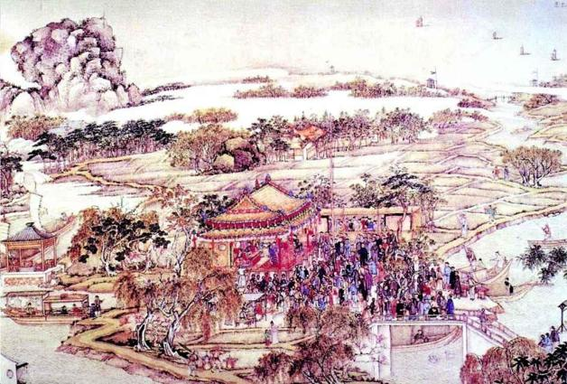
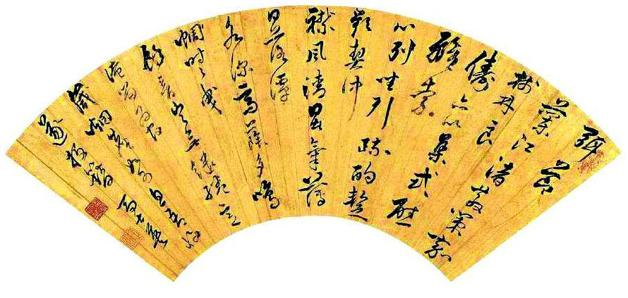

五
明朝并非没有目明耳聪之人。早在一月十二日，史可法呈上一道重要奏章，内言：“北使之旋，和议已无成矣。向以全力御寇而不足，今复分以御北矣。”结论是“和不成惟有战”。[11]
去年八月，明朝派出以左懋第为正使、马绍愉、陈洪范为副使的使团，前往北京议和。十二月中旬，陈洪范只身南还，左懋第等人被扣押，和谈宣告失败。从这事态，史可法解读出满清必将南下的含义，因而向朝廷发出警告，必须立即备战。我们知道，满清当局此时还没有做出南侵决定，假如史可法警告得到重视，从时间上说明朝并非没有机会。
可是石沉大海，全无回音。之如此，并不足奇。看看南京的决策层还剩下些什么人，即知寂寂不闻乃是必然。定策后不久，史可法就被排挤出京。之后，高弘图、姜曰广、刘宗周、张慎言、徐石麒等，或退或罢。战而胜之的是自马士英以下，阮大铖、张捷、张孙振、刘孔昭等一干人。在我们历史中，有一种奇怪不可解的趋向，凡于国家有利者，不论人与事，皆难立足，而祸害国家或损公利己者则每每胜出。“正人尽斥，小人盈朝”，素爱奖劣惩优，而与优胜劣汰的普遍道理背道而驰。究其原因，中国人对社会共同利益，既难以认识，亦从内心不抱信任，觉得唯有个人利益颠扑不破。所以一生以此为鹄的，戮力攘夺，唯恐不足。

清代水乡观剧图。
此图为清人所绘，故人群已是清人装束，不过，清代戏剧完全承自明代，这就是为什么一直到京剧，戏服都是明代样式。戏剧对明代的影响深入骨髓，明代文化有很强的戏剧成分。明人之溺戏剧，往往到内外不分的地步。人生如戏，戏即人生。阮大铖、钱谦益都曾着戏装外出。朱由崧逃跑前，也过足最后一把戏瘾，跨马离宫。
镇江金山寺，汪观清绘。
镇江因扼守长江而得名，自古为南京门户，亦有“京口”之称。前此五百年，韩世忠、梁红玉曾在此阻击金兵，令金兀术不得遂其到临安赏“三秋桂子，十里荷花”之愿。眼下，重新崛起的金人后裔（后金、满清）驱兵复至，鼓帆一举而渡，终于登上长江南岸。
梅兰芳藏明代戏剧脸谱。
脸谱，是中国独特戏剧文化。它以装饰性手法，将人物品性固定为面部符号。这是中国式的人性思考。图中脸谱，为京剧泰斗梅兰芳所珍藏之明代脸谱，风格较后世京剧淡朴，我们已不知它们分别属于哪些人物，但资深的戏迷朱由崧想必很熟悉。

马士英墨迹。
如今，马士英留下的痕迹很少了，就连墨迹也是稀见的，但此人尽撤北防以应左良玉兵变的决策，却被认为对南下清军敞开大门。其实此事对明朝结局影响究竟多大，也很难说。可以肯定，明朝肯定不是坏在某一个人手上。
社会不能以共同福祉为诉求，个人分求自我利益之最大化，造成极端利己意念的盛行和顽强。表现于行为，愈知利己或利己能力愈强，愈能立于不败之地。相反，以国家、社会为念者，往往沦为弱者和败者，除非遇特殊时刻与条件，利己之辈畏缩不前，承其所让后者才可有所成就。在明朝，上述情形便极突出，社会依其奇怪的竞争法则，使唯知利己之人揽入各种权柄，把握诸多要津，以致国有大患甚而将亡亦乏人关心，关心的只是一己欲利。“皮之不存，毛将焉附”，这极简单的道理他们并非理解不了，只是不予考虑，捞不够的焦灼和恐惧填满心胸，哪怕只比别人少捞一丁点，亦必龈龈计较。
高杰之死引起的反应，就很典型。从国家利益角度看，这是影响全局的严重事件，史可法至以“睢州大变”[12]相称。然而，消息南来，那些与高杰素有龃龉的大帅，非但不以为忧患，反倒额手相庆，以为“上天默除大患”。刘泽清、黄得功、刘良佐等三镇，联名合疏：“高杰从无寸功，骄横淫杀……”[13]他们想到的，全是私人恩怨。史可法奏请高杰之子嗣帅位，以稳军心，结果一片哗然。盖因高杰一死，诸帅全都暗打算盘，亟待瓜分其旧部、争抢扬州这片肥肉。当初，高杰恃强，得以扬州为驻地，他这一死，曾与之争扬州而失利的黄得功，立刻乘虚而入：
得功复争扬州，欲尽杀杰妻子以复前仇，可法急遣曲从直解之。[14]
黄不嫌途远，引兵趋扬，谋夺城池外，还想袭击留在扬州未随军北进的“杰家并将士妻子”，“城中大惧”。史可法闻讯，派同知曲从直速往制止，朝廷也急遣内监卢九德“谕止”。为平息事态，朝廷连发二旨：“谕史可法：卿已归扬，解谕黄得功等各归汛地，何必与寡妇孤儿争构。”“大臣先国而后私恨。得功若向扬州，致高营兵将弃汛地东顾，设敌乘隙渡河，罪将谁任？着诸藩各恪守臣节，不得任意。”[15]
一边，是“睢州大变”的沉重判断；一边，却是几位大帅联手欺负孤儿寡母。第二道谕旨指出的“致高营兵将弃汛地东顾”，尤能显示各镇的自私。诸军唯高杰北上，而当重挫之际，却要被人背后捅刀，忧虑后方妻、子的安危。诸镇为夺利而擅离汛地，已属可鄙，更何况极可能致高杰所部将士因后顾之忧丢弃阵地南回，其所作所为完全是亲者痛、仇者快，史可法“有甚于戕我君父，覆我家邦者”[16]的批评毫不为过。